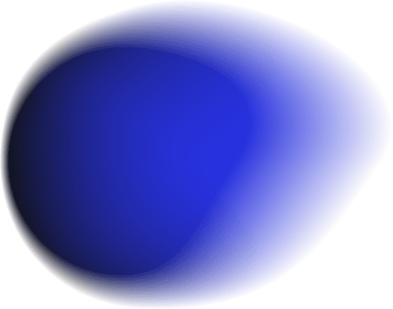
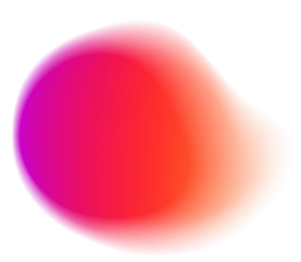
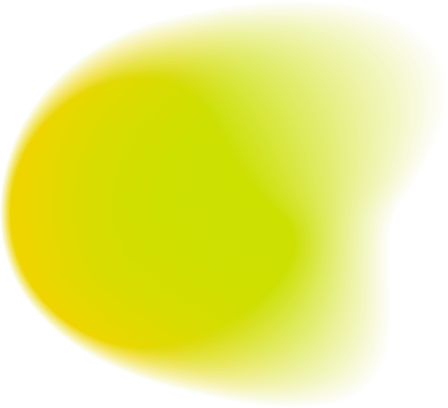
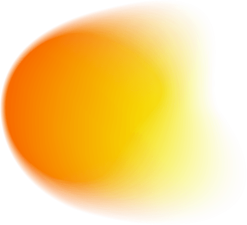

“The most significant breakthrough in birth chart technology in decades.”
Awaken your chart’s intelligence through sound.
Tune in to your authentic design.
Somewhere on this spectrum are your four frequencies. Your birth chart knows where.
“Zodiac’s frequencies translate your unique imprint into sound, bypassing the mind and speaking directly to the body.”Barbara DitlowThe Institution of Human Design School / Personally endorsed by Ra Uru Hu
Listen for just 9-minutes a day.
- /01Drop the exhausting social mask and reclaim your true, unshakeable center.
- /02Turn off the constant internal conflicts so your physical body can finally rest.
- /03Stop attracting the wrong people by breaking your repeating relationship loops.
- /04End the frantic, forced effort and steps you into your natural timing.
- /05Break out of automatic reactions by catching your patterns in real time.
People who pressed play.

“The music has upleveled my meditation practice and creates powerful energetic shifts every day. I have received multiple unexpected very lucrative opportunities since I began tuning in.”Leanne ElyBest-selling author · Founder, Saving Dinner
“I can literally feel the shift in my body and nervous system when I hit play. It’s like having a sonic blueprint of who I am…on repeat.”Todd ShipmanWellness leader · Plant medicine guide
“Listening feels like coming home to myself. My intuition is sharper, my nervous system softer. It’s the reset that helps me become the version of me I want to bring to the world.”Katie WellsBest-selling author · Founder, Wellness Mama
12-month beta. 300 listeners. Nine minutes a day.
Beginning in January of 2025, 300 volunteers listened to Zodiac.fm’s personalized music for a period of 12 months.
The results of those who listened for just 9-Minutes a Day speak for themselves.
Results compound over time
“Zodiac.fm is like a birth note on steroids.”Pam KinzingerSound & Resonance Healing Practitioner
“This music tickled my soul and reminded me that there’s such a connection between vibration, the stars and the sounds that are coordinated by higher intelligence. Give it a try — you’ll love it.”Debra SilvermanAstrologer to Sting, Jennifer Aniston, and More
“I could suddenly see where to put my energy. I stopped second-guessing, and I started making cleaner decisions. Within 45 days, I had nearly 40 paying members in a community I didn’t even know I was going to build.”Jennifer K. HillGlobal Wellness Leader, Founder of Optimatch
Start today
Experience your personalized music now.
Listen anywhere: walking, driving, cooking, working. You don't rearrange your life. The music carries you.
Results in less than five minutes · Less per month than the last Astrology book you bought
- 23+ Tracks under 9 min — For the morning. The commute. The desk. The walk. Each one carries one of your frequencies.
- 4 meditations at 25 minutes. For the deeper sit, focus, and to combine with other practices.
- 4 sleep tracks at 60 minutes. For the wind-down at night. Takes you in a deep slumber, available in all of your frequencies.
“Quietly, everything in my life responds. My meditations. My breathwork. My emotional processing. I am finally feeling the parts of myself that I have only ever read about.”

Zehra AsharyEntrepreneur and Wellness Leader“From the very first week, I felt real shifts. Friends and family noticed the change in my presence. In week one, I was offered a dream position. By week three, insights flowed daily.”Hilary DiMassimo
What happens after you fill out your birth chart
Discover your four unique frequencies in Hz.
The four distinct frequencies that guide you in the domains of Identity, Love, Vitality, and Abundance are calculated for you using 248+ Celestial data points derived from Sri Vidyā mantra tradition.
Hear how each frequency sounds in music.
Each track is remastered up to 700 times by audio engineers to embed and tune it precisely to each of your four frequencies. Real composers. Real production. Not generic meditation drones.
Learn where your frequencies resonate in your body.
Your four frequencies arrive in four separate bands. The band determines where you experience each one in your body.
| Band | Body location |
|---|---|
| 250 — 425 Hz | Belly |
| 425 — 600 Hz | Solar plexus |
| 600 — 775 Hz | Chest and throat |
| 775 — 950 Hz | Toward the crown |
The location affects the flavor of each frequency’s amplification. If your Vitality frequency lands in band three, your nervous system clears through expression.
You will get a complete description on the other side and discover where and how you experience the four domains of your pattern.
Learn how to combine frequencies for maximum effect.
Our research shows that compounding results require frequency balance. You will learn how it works and how to build effective playlists for the week.
Discover how to exponentially enhance your other practices.
Practices like meditation, mindfulness, breathwork, chanting, yoga, Qi Gong, and prayer all provide access to your deeper self by quieting you down.
Learn how combining them with Zodiac, which amplifies the same self, produces exponential effects.
“You can know your Human Design. You can contemplate your Gene Keys. But you can still feel stuck. Insight alone does not create integration. Zodiac.fm works at the frequency level underneath the pattern. Instead of just studying your blueprint, you begin resonating with it.”Summer PhoenixHuman Design and Gene Keys Practitioner
“I’ve been using Zodiac for over a month now. Having it on in the background while I work has allowed me to slip into my flow state much easier while having a greater sense of calm and ease. Absolutely never going to work again without it playing in the background.”Alex KikelTrainer to Olympians and Professional Athletes
The real law of attraction
Experience the real law of attraction.
As you begin to resonate as your deeper self, the field responds. The right people gravitate toward you. The wrong ones drop away. Opportunities arrive. Traps avoid you.
Completely secure · Less than five minutes away
“This is the only sound healing that’s made just for me. It fast-tracked clarity in my relationship. I knew who I was, so I saw him more clearly. That foggy feeling was gone.”Kate Waring
“From the first 631 Hz tonal ring in my ears, it’s as if my soul comes alive. The musical cords within me vibrating, dancing, humming. I am finally able to feel myself, my soul, entirely present within this body. Everything comes together and connects within me the second the track starts. The tears come streaming down my face and I let them. I am finally whole.”Ellen Grimaldi
How Your Frequencies Guide You
From your birth time and location, we calculate 248+ celestial data points and run them through an algorithm derived from the Sri Vidyā mantra lineage, Jyotish Vedic astrology, and Western/Tropical traditions. Four frequencies emerge, all in the 250 — 950 Hz range, where the human nervous system shows the strongest somatic resonance.
Core.
The internal reference signal for who you are and what is yours to do.
When amplified, you become grounded in who you are. Less internally conflicted. This is your frequency of deep wisdom and self-knowledge.
It can also be challenging if you are not living in accordance with your values. The signal does not lie.

Love.
The internal reference signal for connection within yourself and with others.
When resonating, you experience deeper care for others. You begin attracting who you’re meant to attract. Connection finds you with less effort.
And yes, as you resonate more from this frequency, you do become more magnetic.

Vitality.
The internal reference signal for energy, tension, and recovery.
As this gets louder, you intuitively know what energizes you and what drains you. You become clearer. You begin running on cleaner energy.

Abundance.
Your exchange frequency. The internal reference signal for action, exchange, and material result.
You start thinking bigger. Possibilities show up faster. Movement comes easier in work, money, and mission.
And if you are practicing any type of manifestation work, this frequency might just be the key to it actually being effective.
“I’m just finishing my first week and I can’t begin to explain how different I feel compared to just 5 days ago. I feel like ME. I feel like the person I’ve been trying to get back to for so long without forcing anything. I’m not second guessing it or myself anymore.”Amber Hedrick
“When I listened to my core frequency track, my whole nervous system relaxed into recognition. Like coming home to myself.”Rhonda BrittenEmmy Award Winner, Best-Selling Author of Fearless Living
“I am seeing a huge difference in how much more loving I am. I’m more affectionate, more grounded.”Amy Wilcox
“Without doing anything but listening, I become a different person. I shift into the version of me I actually want to be. I can tap into different frequencies based on what I need — abundance when I’m visualizing, love when I want to connect with people, core when I need to realign.”Joey VaillancourtCMO of Biooptimizers (Fortune 100 Company)
“Once I started listening to all of the different frequencies, but in particular the abundance one, I landed two new clients that came literally out of the blue.”Hillary PortaWomen’s Executive Coach
“I listened to my core frequency while I was journaling. I noticed the effects immediately. I went from ranting and complaining in my pages to writing in a way that felt hopeful and solutions oriented in only 9 minutes. I was blown away and immediately started sharing this powerful transformation with all my Human Design clients.”Tangie NadimiFounder · Human Design Practitioner, Feel Good Human Design
Frequently asked.
What if I don’t know my exact birth time?
Don’t worry this is a common question. We will be honest, your birth time does affect the calculation of your frequencies.
However, because the Zodiac works like a tuning fork to create resonance to amplify your signal, if it is close enough you will still get an effect.
Just not as fast or clear as you would if it was exact.
Once you are a member, we will provide ways for you to get your birth time. It is easier than you think.
And if you aren’t getting effects, we can change your birth time for you once a week until you experience resonance effects.
This happens all the time, and 95% of the time we get there.
So just choose 12:00 NOON if you have no idea, otherwise make an educated guess.
How does it work?
You enter your birth details. We calculate four frequencies from 248+ celestial data points. We embed those frequencies into music remastered up to 700 times to tune precisely to you.
How much time does it take?
Our beta showed listening for a minimum of 9 minutes a day produced results.
But most people listen for over an hour. Not because they have to. Because the music is good. Really good. But the more you listen, the more profound the results.
These aren’t generic meditation drones. Real composers. Real production. Your frequencies are embedded and tune each song.
Play it at home. In the car. At the gym. While you work. Build playlists. Loop your favorites. Fall asleep to it.
This isn’t a practice you have to remember. It’s music you’ll actually want on.
What if I already know my chart really well?
Good. This isn’t about learning more information. It’s about your system recognizing its pattern from the inside. Knowing your chart cognitively is different from embodying it automatically.
And once you experience the intelligence of your chart from within, you will wonder how you functioned without it.
What if I’m skeptical about astrology?
You don’t need to believe anything. The frequencies are calculated mathematically from your birth moment. Listen and notice what happens.
Will this work with my other practices?
Yes. Meditation, breathwork, yoga, plant medicine, Qi Gong, prayer, and manifestation are dramatically enhanced by combining your Zodiac frequencies. Practitioners of almost every tradition combine Zodiac for exponential results.
Can I cancel anytime?
Yes. No contracts, no hassle. Cancel in the app, or email [email protected] and a real human will help.
What do I get when I enter my birth details?
You’ll see your four frequencies in exact Hz. Where each one lands in your body. Your frequency distribution type and what it means. Your chart, mapped in a way no one has shown you before.